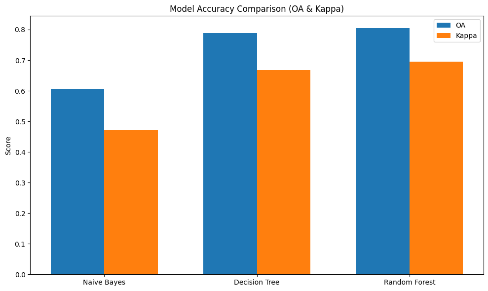
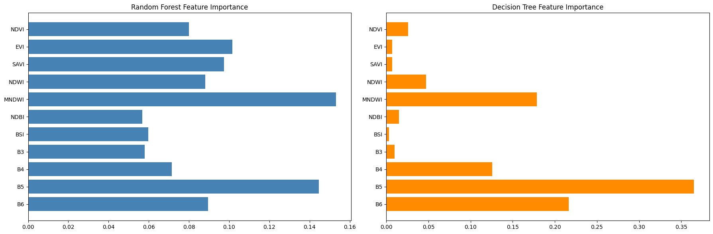
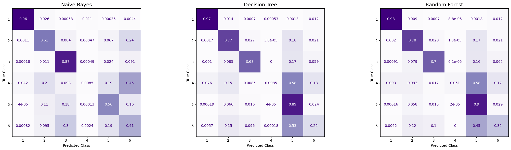
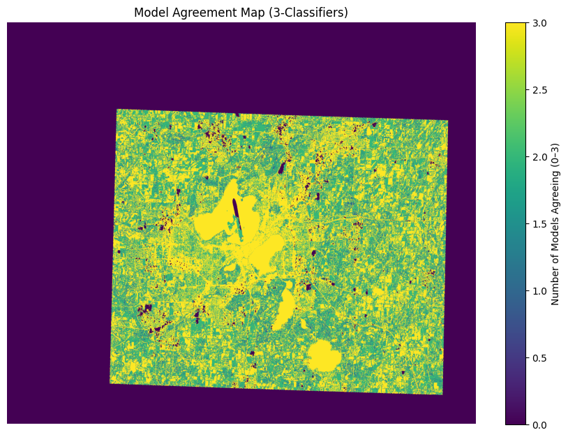
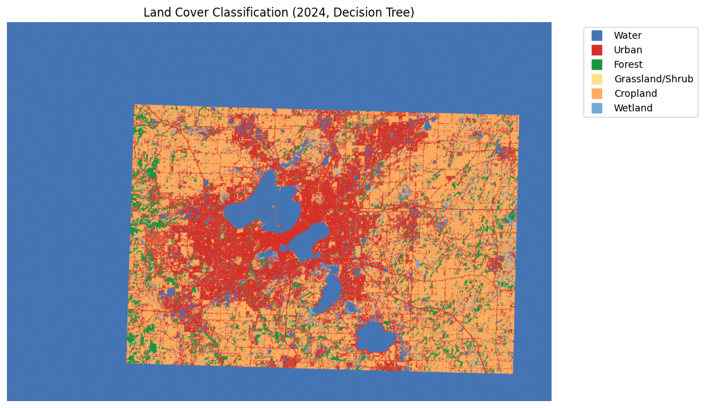
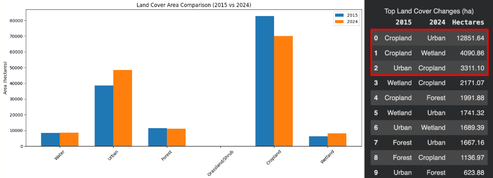
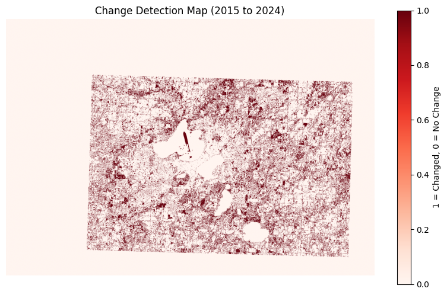
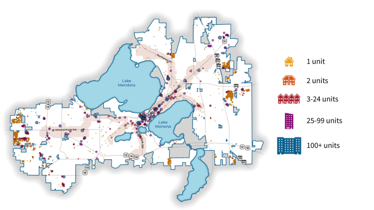

PACE Algal Bloom Analysis
Mapping chlorophyll-a from the PACE OCI sensor to explore global ocean productivity, compare algae products, and track temporal trends in phytoplankton.
PACE Ocean Productivity and Algal Bloom Detection
This project focuses on remote sensing-based land cover classification and environmental change detection in Madison, Wisconsin. The objective was to analyze how land use changed between 2015 and 2024 while evaluating how machine learning model complexity affects classification performance. Satellite imagery from NASA's Harmonized Landsat Sentinel-2 (HLS) dataset was accessed through Google Earth Engine and processed into seasonal composite images for each year.
Spectral features, including vegetation, water, and urban indices, were engineered from the imagery and paired with labeled data from the National Land Cover Database (NLCD). Three supervised learning models (Gaussian Naive Bayes, Decision Tree, and Random Forest) were trained on 2015 data and evaluated using stratified cross-validation. Model performance was assessed using overall accuracy and Cohen's Kappa, highlighting trade-offs between simplicity, interpretability, and predictive power.
The best-performing model was applied to classify both 2015 and 2024 imagery, enabling direct comparison across time. A change detection analysis was then conducted to quantify land cover transitions, such as urban expansion and vegetation shifts, including estimates of affected area. This project demonstrates the integration of geospatial data processing, feature engineering, and machine learning to address real-world environmental monitoring challenges.
Figure Gallery

Bar chart comparing Overall Accuracy (OA) and Cohen's Kappa scores for the three machine learning classifiers. The figure summarizes overall model performance and agreement beyond random chance.
Comparison of feature importance scores for spectral bands and indices used in the Random Forest and Decision Tree models. The figure highlights which variables contributed most strongly to land cover classification.
Normalized confusion matrices comparing the classification performance of the Naive Bayes, Decision Tree, and Random Forest models. Each matrix shows the proportion of correctly and incorrectly classified land cover classes, allowing evaluation of model accuracy and class-level performance. (B5 and MNDWI were the strongest features in both models)
Spatial agreement map showing how many of the three classifiers produced the same prediction for each pixel in the 2024 dataset. Higher agreement indicates greater classification confidence, while lower agreement identifies areas of uncertainty.
Final land cover classification map for 2024 generated using the Decision Tree model. Distinct colors represent different land cover classes, providing a spatial overview of landscape composition across the study area.
Bar chart comparing the total area of each land cover class between 2015 and 2024. The figure provides a quantitative summary of gains and losses in land cover categories across the study period.
Change detection map showing spatial locations where land cover classes changed between 2015 and 2024. The figure highlights areas of transition and identifies regions with stable versus changing land cover patterns over time.
Map showing the distribution of housing unit density across Madison. Higher-density housing is concentrated near the central areas and major transportation corridors, corresponding with the increase in developed land shown in Figure 9 and emphasizing Madison's urbanization. (Map source credited to the original creator linked in the image reference.)